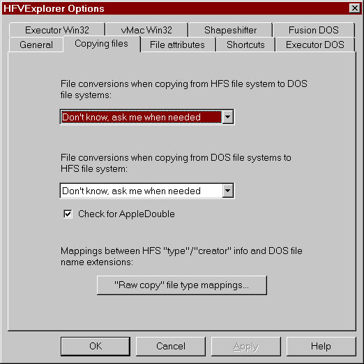

File conversion when copying from HFS to DOS:
Defines what file conversion to use when you copy or move files from HFS volumes to a Windows drive. If Don't know, ask me when needed is selected, HFVExplorer will ask you what conversion to use when a copy or move is attempted.The 6 file conversions options are described in the chapter File Conversions.
File conversions when copying from DOS to HFS:Defines what file conversion to use when you copy or move files from Windows drives to an HFS volume. If Don't know, ask me when needed is selected, HFVExplorer will ask you what conversion to use when a copy or move is attempted.Raw copy file type mappings:The 6 file conversions options are described in the chapter File Conversions.
Opens a dialog box where you can define the dependencies between Windows (usually) three letter file name extensions and Macintosh Type and Creator information. For example, you may want to map all files with name *.SIT to a Mac type 'SITD' and creator 'SIT!', which specifies a StuffIt archive file.HFVExplorer ships with no preset mappings, you need to build your own. There is a description on how to set up the type mappings.